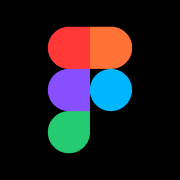

Logos and favicons belong to their owners and are shown here for reference. This is not an endorsement and it is not a license to use the mark.
Figma is the design tool at figma.com. The “F” mark in the tab is what file links show in a browser, distinct from FigJam unless the host served that asset.
Checked 12 November 2026 against figma.com. HTML came from https://www.figma.com/ (HTTP 200). Icon link tags: icon 128x128 → https://static.figma.com/app/icon/2/icon-128.png; icon 192x192 → https://static.figma.com/app/icon/2/icon-192.png; icon 256x256 → https://static.figma.com/app/icon/2/icon-256.png; icon → https://static.figma.com/app/icon/2/favicon.png; icon any → https://static.figma.com/app/icon/2/favicon.svg; icon → https://static.figma.com/app/icon/2/favicon.ico. 5 more are in the table below.
The favicon.ico URL is https://static.figma.com/app/icon/2/favicon.ico. The saved file favicon.ico is 16958 bytes. Directory sizes: 64×64.
The apple-touch-icon URL is https://static.figma.com/app/icon/2/touch-180.png, measured at 180×180 png.
Brand colour #ffffff comes from the theme-color meta tag.
Largest measured bitmap: png-256x256-07.png at 256×256 (png, 3827 bytes) from https://static.figma.com/app/icon/2/icon-256.png.
Saved facts
favicon.ico URL: https://static.figma.com/app/icon/2/favicon.ico
apple-touch-icon URL: https://static.figma.com/app/icon/2/touch-180.png

Brand colour #ffffff — theme-color meta tag.
Preview
The preview uses the static snapshot png-180x180-01.png, measured at 180×180. The boxes scale that same saved file in the browser. They are not extra downloads and they do not call the favicon API.

Download
Every button is a file saved from the live response on the check date. Nothing here was resized on a server, and the buttons point at those static files.
png-180x180-01.png png-167x167-02.png png-152x152-03.png png-120x120-04.png png-76x76-05.png favicon.ico png-256x256-07.png png-192x192-08.png


Files and measured dimensions
| File | Format | Dimensions | How measured | Bytes | Found via | Source URL |
|---|---|---|---|---|---|---|
| png-180x180-01.png | png | 180×180 | PNG IHDR | 2667 | apple-touch-icon | https://static.figma.com/app/icon/2/touch-180.png |
| png-167x167-02.png | png | 167×167 | PNG IHDR | 2607 | apple-touch-icon | https://static.figma.com/app/icon/2/touch-167.png |
| png-152x152-03.png | png | 152×152 | PNG IHDR | 2309 | apple-touch-icon | https://static.figma.com/app/icon/2/touch-152.png |
| png-120x120-04.png | png | 120×120 | PNG IHDR | 1915 | apple-touch-icon | https://static.figma.com/app/icon/2/touch-120.png |
| png-76x76-05.png | png | 76×76 | PNG IHDR | 1270 | apple-touch-icon | https://static.figma.com/app/icon/2/touch-76.png |
| favicon.ico | ico | 64×64 | ICO directory | 16958 | link | https://static.figma.com/app/icon/2/favicon.ico |
| png-256x256-07.png | png | 256×256 | PNG IHDR | 3827 | link | https://static.figma.com/app/icon/2/icon-256.png |
| png-192x192-08.png | png | 192×192 | PNG IHDR | 2877 | link | https://static.figma.com/app/icon/2/icon-192.png |


Link tags found
| rel | sizes | type | color | href |
|---|---|---|---|---|
| icon | 128x128 | — | — | https://static.figma.com/app/icon/2/icon-128.png |
| icon | 192x192 | — | — | https://static.figma.com/app/icon/2/icon-192.png |
| icon | 256x256 | — | — | https://static.figma.com/app/icon/2/icon-256.png |
| icon | — | image/png | — | https://static.figma.com/app/icon/2/favicon.png |
| icon | any | image/svg+xml | — | https://static.figma.com/app/icon/2/favicon.svg |
| icon | — | image/vnd.microsoft.icon | — | https://static.figma.com/app/icon/2/favicon.ico |
| apple-touch-icon | 76x76 | — | — | https://static.figma.com/app/icon/2/touch-76.png |
| apple-touch-icon | 120x120 | — | — | https://static.figma.com/app/icon/2/touch-120.png |
| apple-touch-icon | 152x152 | — | — | https://static.figma.com/app/icon/2/touch-152.png |
| apple-touch-icon | 167x167 | — | — | https://static.figma.com/app/icon/2/touch-167.png |
| apple-touch-icon | 180x180 | — | — | https://static.figma.com/app/icon/2/touch-180.png |


Manifest icons as declared
These sizes are the strings in the manifest. They are not a measurement unless the same URL was downloaded and appears in the file table.
| src | sizes | type | purpose |
|---|---|---|---|
| https://static.figma.com/app/icon/2/icon-192.png | 192x192 | image/png | — |
| https://static.figma.com/app/icon/2/icon-512-maskable.png | 512x512 | image/png | maskable |
| https://static.figma.com/app/icon/2/icon-512.png | 512x512 | image/png | — |


How this compares with a normal favicon set
A site you publish yourself usually needs a different set from the one Figma happens to ship: 16×16, 32×32 and 48×48 in one favicon.ico, a 180×180 apple-touch icon, and 192×192 plus 512×512 manifest PNGs. That chart is the favicon dimensions guide. Use these saved files as a reference, then build your own with the PNG to favicon converter.
Related site icons
- Squarespace favicon (squarespace.com)
- Wix favicon (wix.com)
- Canva favicon (canva.com)
- Grammarly favicon (grammarly.com)
- iCloud favicon (icloud.com)
- Linear favicon (linear.app)
FAQ
What is the Figma favicon.ico URL?
Yes. favicon.ico (16958 bytes) from https://static.figma.com/app/icon/2/favicon.ico. Directory sizes: 64×64.
What are the Figma favicon dimensions?
The pixel sizes below were read from the files, not from a generic size chart. png-180x180-01.png: 180×180 (PNG IHDR) png-167x167-02.png: 167×167 (PNG IHDR) png-152x152-03.png: 152×152 (PNG IHDR) png-120x120-04.png: 120×120 (PNG IHDR) png-76x76-05.png: 76×76 (PNG IHDR) favicon.ico: 64×64 (ICO directory) png-256x256-07.png: 256×256 (PNG IHDR) png-192x192-08.png: 192×192 (PNG IHDR)
What apple-touch-icon does Figma publish?
Yes. https://static.figma.com/app/icon/2/touch-180.png saved as png-180x180-01.png.
What brand colour does the Figma favicon page record?
#ffffff, from the theme-color meta tag.
Which icon files were saved for Figma?
On 12 November 2026 these image files were downloaded for figma.com: png-180x180-01.png (png, 2667 bytes, 180×180); png-167x167-02.png (png, 2607 bytes, 167×167); png-152x152-03.png (png, 2309 bytes, 152×152); png-120x120-04.png (png, 1915 bytes, 120×120); png-76x76-05.png (png, 1270 bytes, 76×76); favicon.ico (ico, 16958 bytes, 64×64); png-256x256-07.png (png, 3827 bytes, 256×256); png-192x192-08.png (png, 2877 bytes, 192×192).
May I use the Figma icon on my own site?
No. Logos and favicons belong to their owners and are shown here for reference so you can see the real format and dimensions. For your own site, make a file with the PNG to favicon converter or download a site you control.
Look up another domain in the favicon downloader, fetch several at once with the bulk favicon downloader, or go back to the site favicon index.